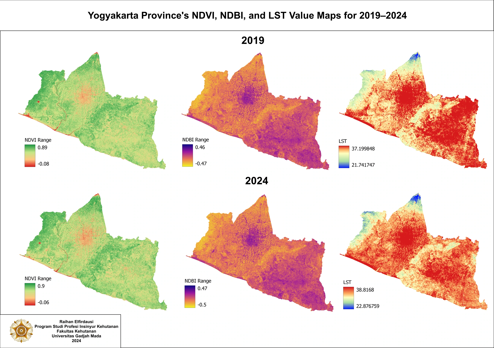

06 / Geospatial analysis
Vegetation, built-up areas & heat in Yogyakarta
Comparing NDVI, NDBI, and land surface temperature to explore patterns of vegetation, urban cover, and heat.


The question behind the map.
This project compares two periods in Yogyakarta, 2019 and 2024, using Landsat-8 imagery. The maps place vegetation, built-up areas, and surface temperature alongside one another for spatial comparison.
How I approached it.
The analysis uses the Normalized Difference Vegetation Index (NDVI), Normalized Difference Built-up Index (NDBI), and Land Surface Temperature (LST). Each indicator is mapped to examine how vegetation and urban cover relate to surface temperature patterns.
What the work shows.
The outputs show mapped differences in vegetation, built-up indicators, and surface temperature across the two periods. They support an exploratory reading of urban heat patterns. Satellite surface temperature should be interpreted separately from air temperature, and observed spatial associations alone do not establish causation.
Reading the results
Personal mapping project. Spectral indices are indicators; their interpretation depends on local conditions, imagery, and validation.
Supporting materials
A closer look.
Maps and processing views from this project. Select an image to view it at a larger size, or use the arrow keys to move through the gallery.